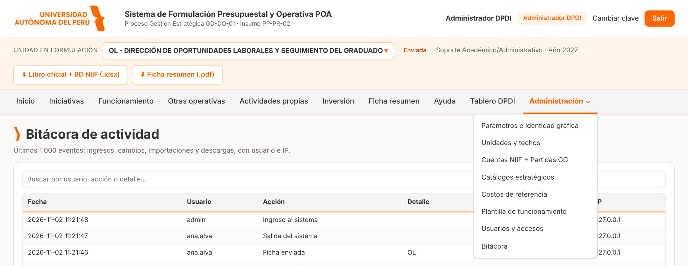
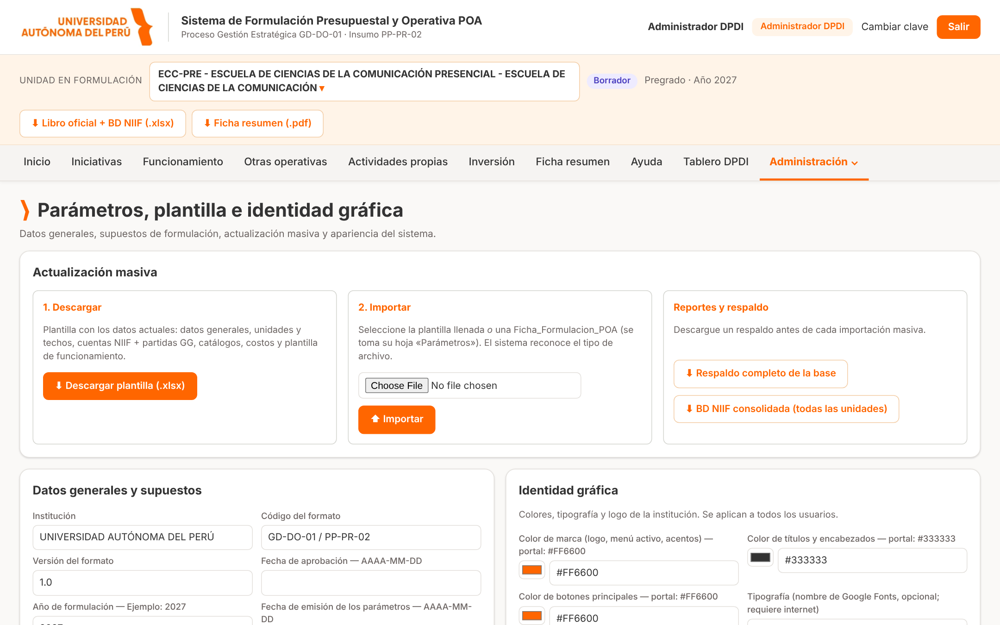
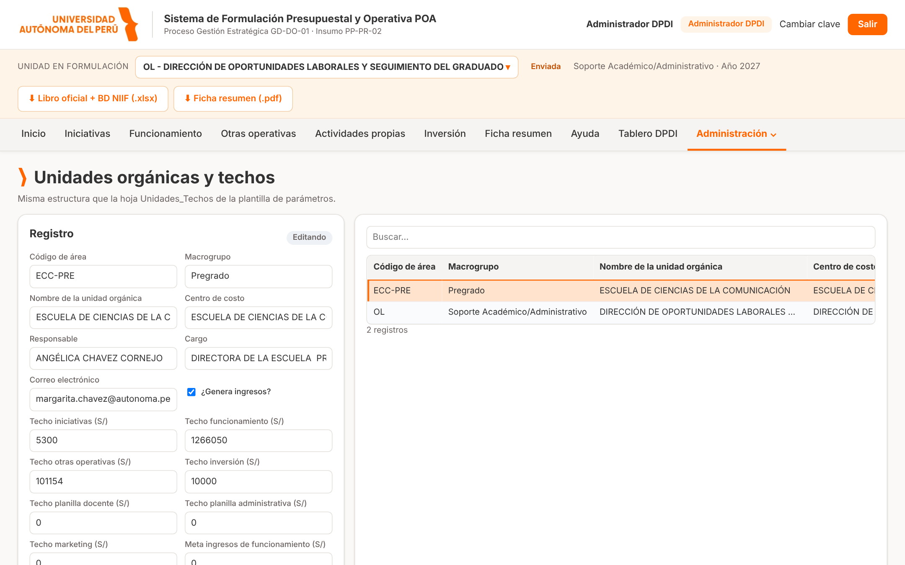
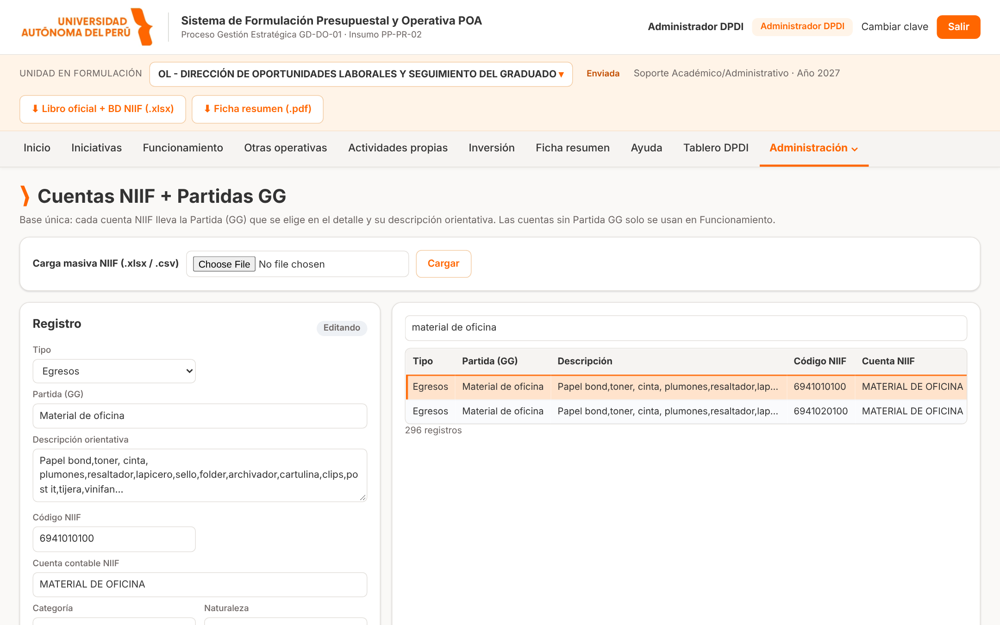
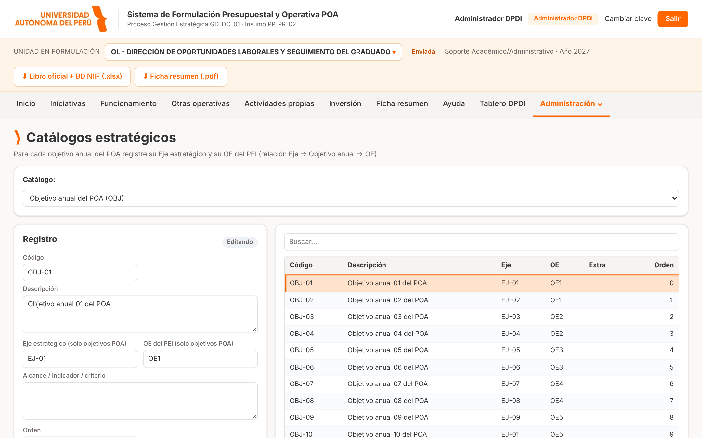
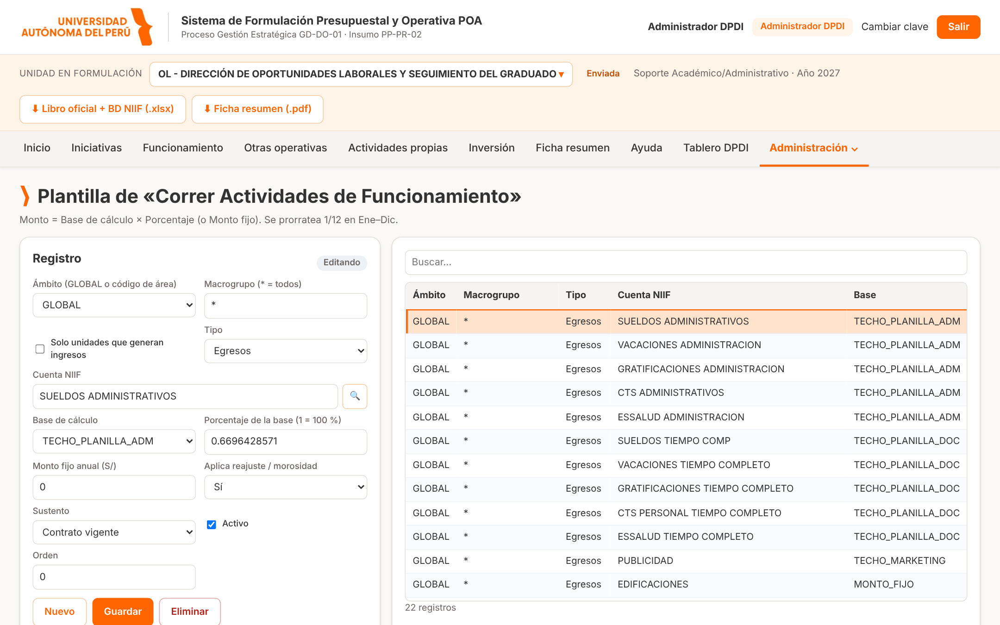
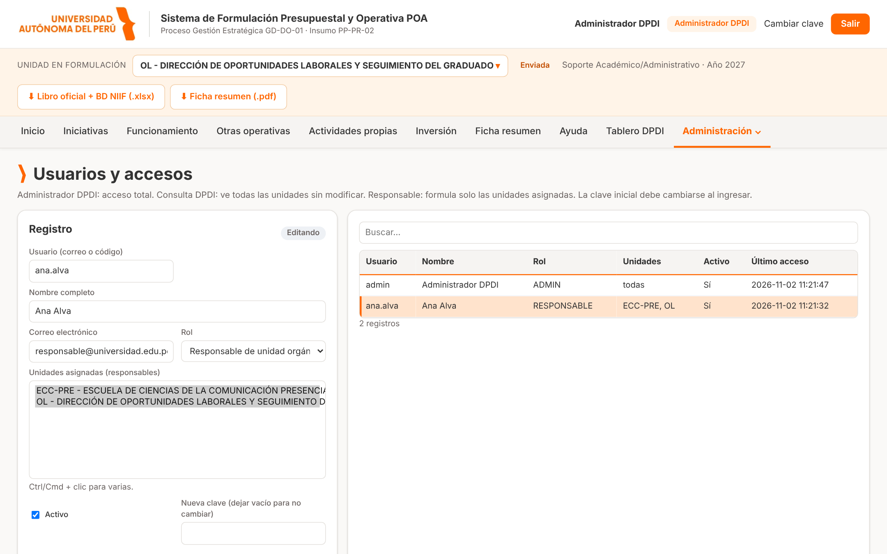
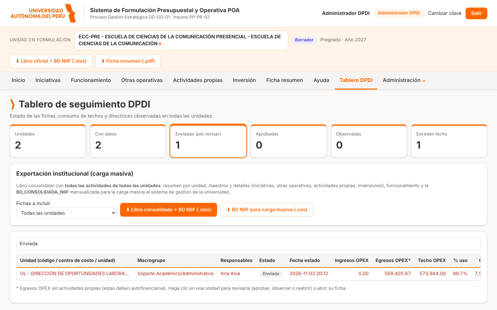
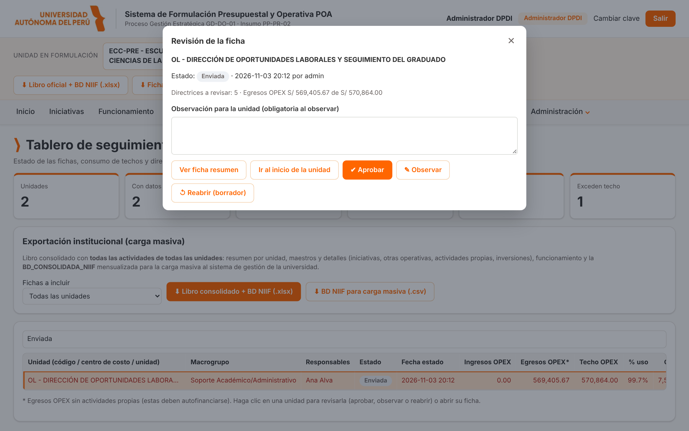
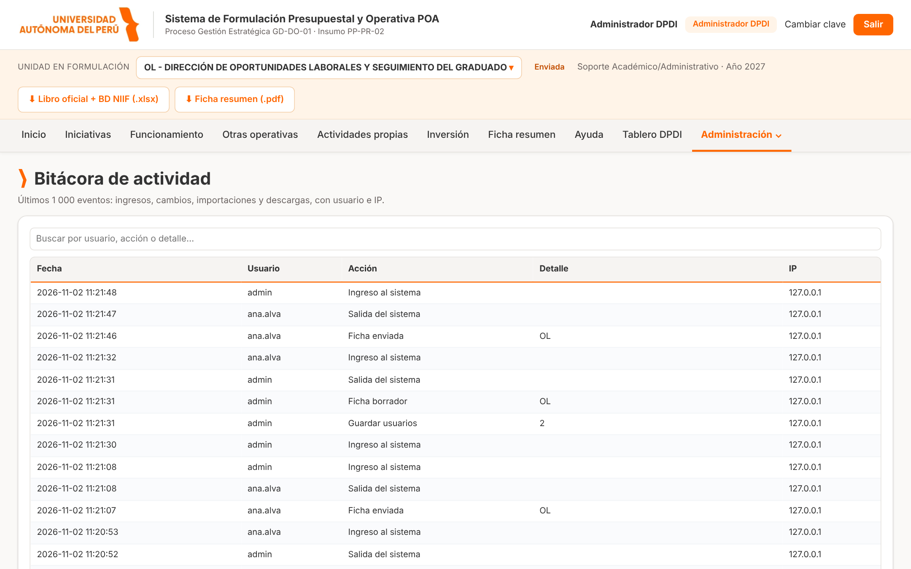

Propósito: describir la preparación del proceso de formulación (parámetros, catálogos, unidades, techos y usuarios), el seguimiento y la revisión de las fichas, la consolidación institucional y las tareas de control (bitácora y respaldos).
Versión del documento: 1.0 · {{FECHA}}
Complementa: Manual del usuario (registro de la ficha) y Manual técnico de Tecnologías de la Información (instalación y operación).
El rol Administrador DPDI tiene acceso total: puede ver y modificar la ficha de cualquier unidad en cualquier estado, mantener todos los catálogos y gestionar los usuarios. Por ello se recomienda asignarlo solo a dos o tres personas de la DPDI y usar el rol Consulta DPDI para quienes solo necesitan ver el avance.
| Tema | Responsabilidad |
|---|---|
| Preparación | Publicar parámetros del año, catálogos estratégicos, cuentas NIIF / partidas, unidades, techos y plantilla de funcionamiento. |
| Accesos | Crear usuarios, asignar unidades, restablecer claves y desactivar cuentas que ya no se usan. |
| Seguimiento | Monitorear el avance en el Tablero DPDI y apoyar a las unidades con directrices pendientes. |
| Revisión | Aprobar u observar las fichas enviadas; reabrir fichas cuando corresponda. |
| Consolidación | Descargar la BD NIIF consolidada y los libros oficiales por unidad. |
| Control | Revisar la bitácora y descargar respaldos en los hitos del proceso. |
| Etapa | Actividades en el sistema |
|---|---|
| 1. Preparación | Actualizar parámetros (año, tipo de cambio, reajuste, morosidad, fecha límite), catálogos, cuentas, unidades y techos. Lo más rápido es llenar la plantilla de Parámetros y Catálogos en Excel e importarla. |
| 2. Accesos | Crear los usuarios responsables con clave temporal y asignarles sus unidades. Comunicar la dirección del sistema y el Manual del usuario. |
| 3. Formulación | Las unidades registran su ficha. La DPDI monitorea el tablero y responde consultas. |
| 4. Revisión | Revisar las fichas enviadas: aprobar u observar con un comentario claro. |
| 5. Consolidación | Con todas las fichas aprobadas, descargar la BD consolidada y un respaldo completo. |
| 6. Cierre | Desactivar o pasar a solo lectura a los usuarios que no seguirán trabajando; archivar los respaldos. |
Tecnología entregará la clave inicial del usuario admin. Al ingresar por primera vez el sistema le exigirá cambiarla.
Luego, cree un usuario personal con rol Administrador DPDI para cada administrador y use admin solo como cuenta
de contingencia: así la bitácora identifica a cada persona.
El administrador ve, además del menú normal, el Tablero DPDI y el desplegable Administración:

Todos los mantenedores siguen el mismo patrón: tabla con buscador, formulario a la derecha y botones Nuevo, Guardar y Eliminar. Haga clic en una fila para editarla.
El administrador puede seleccionar cualquier unidad en la barra crema (clic en el nombre de la unidad) y entrar a sus páginas de registro, incluso si la ficha está Enviada o Aprobada. Úselo para correcciones puntuales y deje constancia en la observación o en el expediente: todos los cambios quedan en la bitácora con su usuario.
Menú Administración → Parámetros e identidad gráfica.

| Parámetro | Uso en el sistema |
|---|---|
| Institución, código, versión y fecha del formato | Encabezados del libro Excel y del PDF de la Ficha resumen. |
| Año de formulación | Año de todas las fichas. Cambiarlo inicia un nuevo ejercicio (los datos de años anteriores se conservan). |
| Fecha límite de presentación | Se muestra en la pantalla de acceso como «cierre». |
| Tipo de cambio | Convierte a soles los montos registrados en US$. |
| Reajuste remunerativo (%) y mes de inicio | Se aplica a las filas de Funcionamiento – egresos con «Aplica reajuste = Sí». |
| Tasa de morosidad (%) | Se descuenta de los ingresos de funcionamiento con «Aplica morosidad = Sí». |
| Inflación, UIT, RMV, estudiantes, pensiones, cuotas | Supuestos de referencia y bases de cálculo de la plantilla de funcionamiento. |
| Director(a) y cargo DPDI | Firma «Revisado por» del PDF. |
Pulse Guardar parámetros. Los cálculos de todas las fichas se actualizan al instante.
Los colores vienen configurados con la paleta del portal institucional: naranja #FF6600 para marca y botones y gris
#333333 para títulos. Puede ajustarlos con el selector de color, indicar una tipografía de Google Fonts (opcional,
requiere internet en los equipos de los usuarios) y subir el logo oficial (PNG, SVG, JPG o WEBP) con «Subir logo».
En la tarjeta Actualización masiva de la misma página:
Datos_Generales, Unidades_Techos, Cuentas_NIIF_Partidas_GG, Catalogos_Estrategicos,
Costos_Referencia y Plantilla_Funcionamiento.En el mismo recuadro 2. Importar también puede cargar una Ficha_Formulacion_POA llenada: el sistema toma su hoja «Parámetros» (datos generales y techos de la unidad). El recuadro Reportes y respaldo ofrece el Respaldo completo de la base y la BD NIIF consolidada de todas las unidades (ver capítulos 12 y 13).
Menú Administración → Unidades y techos. Tiene la misma estructura que la hoja Unidades_Techos de la plantilla.

| Campo | Descripción |
|---|---|
| Código de área | Identificador único de la unidad (por ejemplo 101109). Es el prefijo de los códigos en la base consolidada. |
| Centro de costo | Nombre del centro de costo (por ejemplo CENTRO DE INNOVACIÓN). |
| Nombre de la unidad orgánica | Unidad orgánica o sede (por ejemplo Lima Sur). La unidad se muestra como código - centro de costo - unidad orgánica. |
| Macrogrupo | Agrupación usada en reportes y en la plantilla de funcionamiento. |
| Responsable, cargo, correo | Datos que aparecen en la Ficha resumen. |
| ¿Genera ingresos? | Habilita las filas de ingresos de la plantilla de funcionamiento marcadas como «solo unidades que generan ingresos». |
| Techos (S/) | Iniciativas, funcionamiento, otras operativas, inversión, planilla docente, planilla administrativa y marketing. |
| Metas (S/) | Meta de ingresos de funcionamiento, de otras operativas y de resultado de actividades propias. |
Base única de partidas: cada registro relaciona la Partida (GG) que el usuario elige en el detalle con su descripción orientativa, la cuenta contable NIIF, la categoría presupuestal, la naturaleza y el resultado por función. Al elegir una partida en una ficha, el sistema asigna automáticamente estos datos para la base consolidada.

Use el filtro superior para elegir el catálogo: ejes estratégicos, objetivos estratégicos del PEI (OE), objetivos anuales del POA, categorías, tipos de inversión, sustentos, etc.

Para cada objetivo anual del POA registre su Eje estratégico y su OE del PEI. Esta relación es la que permite que, en Iniciativas, la lista de objetivos se filtre por eje y que el OE se complete automáticamente. Un objetivo sin eje no aparecerá al usuario; un objetivo sin OE dejará la iniciativa con la directriz DF-01 pendiente.
Lista de costos unitarios de referencia (concepto, unidad de medida, costo en soles y fuente o vigencia) que las unidades consultan para estimar sus requerimientos.
Define las filas que se insertan cuando una unidad pulsa Correr Actividades de Funcionamiento en Inicio.

| Campo | Descripción |
|---|---|
| Ámbito | GLOBAL para todas las unidades o el código de área de una unidad específica. |
| Macrogrupo | * para todos o el macrogrupo al que aplica. |
| Solo unidades que generan ingresos | Limita la fila a unidades con «¿Genera ingresos? = Sí». |
| Tipo y cuenta NIIF | Egresos o Ingresos y la cuenta a la que se registra. |
| Base de cálculo, porcentaje, monto fijo | Monto = base × porcentaje (1 = 100 %), o el monto fijo anual. Se prorratea 1/12 de enero a diciembre. |
| Aplica reajuste / morosidad | Aplica el reajuste (egresos) o la morosidad (ingresos) de los parámetros. |

ana.alva), nombre completo y correo.| Tarea | Cómo hacerlo |
|---|---|
| Restablecer una clave olvidada | Seleccione el usuario, escriba una nueva clave temporal, marque «Debe cambiar la clave» y guarde. Esto también desbloquea la cuenta. |
| Desbloquear tras intentos fallidos | Restablezca la clave o espere 15 minutos. |
| Retirar el acceso | Desmarque Activo. No elimine usuarios con historial: la bitácora los referencia. |
| Cambiar las unidades de un responsable | Modifique «Unidades asignadas» y guarde. El cambio rige desde su siguiente acción. |
| Ver último acceso | Columna «Último acceso» de la tabla. |
administrar_usuarios.py (ver Manual técnico).El Tablero DPDI resume, por unidad, el estado de la ficha, los montos registrados frente a los techos, las directrices pendientes y la fecha del último cambio. Use el buscador para filtrar y haga clic en una unidad para abrirla.


| Acción | Desde | Resultado |
|---|---|---|
| Aprobar | Enviada | La ficha queda Aprobada y en solo lectura para la unidad. |
| Observar | Enviada o Aprobada | Exige escribir la observación. La ficha pasa a Observada y la unidad puede corregir y reenviar. |
| Reabrir (borrador) | Enviada, Aprobada u Observada | Devuelve la ficha a Borrador y borra la observación. |
| Reporte | Dónde | Contenido |
|---|---|---|
| Libro oficial + BD NIIF | Barra de la unidad | Ficha de Formulación de la unidad seleccionada en el formato oficial (16 hojas) más la hoja BD_CONSOLIDADA_NIIF. |
| Ficha resumen (PDF) | Barra de la unidad | 12 secciones y espacios de firma. |
| BD NIIF consolidada de todas las unidades | Parámetros → Reportes y respaldo | Una fila por concepto y mes de todas las unidades, con cuenta NIIF, categoría y partida, lista para tablas dinámicas o Power BI. |
| Respaldo completo | Parámetros → Reportes y respaldo | Copia de la base de datos (archivo .sqlite3) para archivo o restauración por Tecnología. |
La Bitácora registra quién hizo qué y cuándo: ingresos, intentos fallidos, altas y cambios de registros, importaciones, descargas, cambios de estado y cambios de parámetros, con la dirección IP del equipo. Puede filtrarla por texto (usuario, unidad, acción).

Tecnología programa respaldos automáticos diarios. Además, se recomienda que la DPDI descargue un respaldo completo:
admin.Dirección de Planeamiento y Desarrollo Institucional · Sistema POA - DPDI · Manual del administrador v1.0